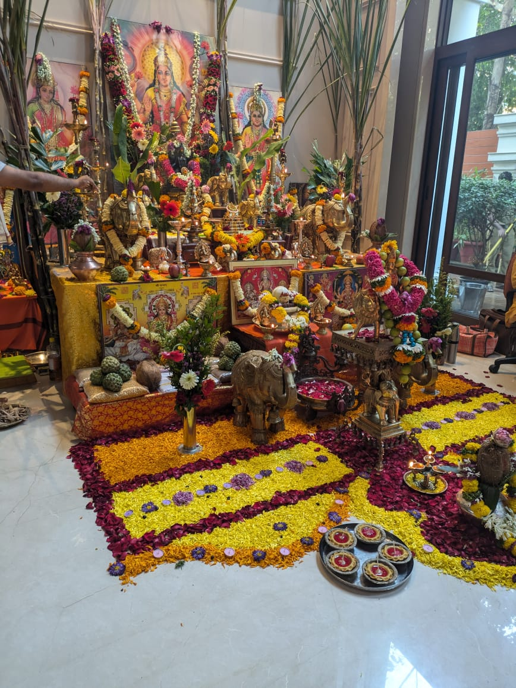
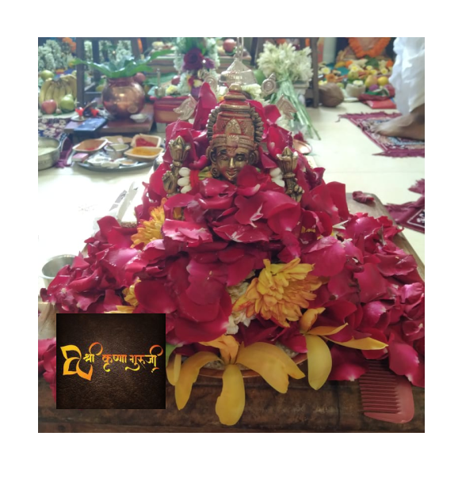
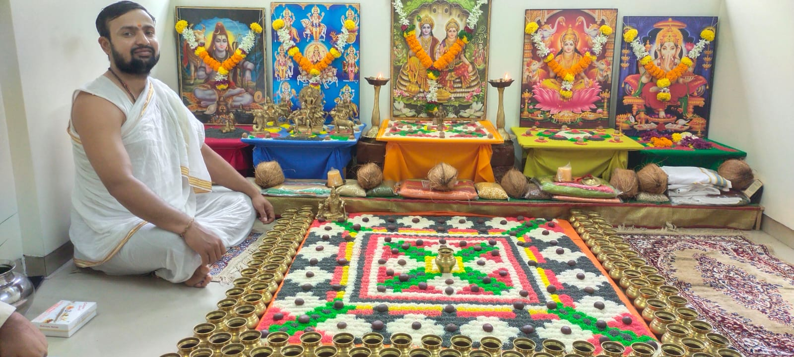

Vastu For House
As you are already aware that vastu is an ancient Indian science of enhancing positive and eliminating negative energies in and around a place or person; and the more positive energies are around you, the more abundance is attracted towards you.
Now, a home is the place where a person or family “lives” and by lives I mean really live and not just stay. For a house to become a home, it needs to radiate the right kind of energy. According to a number of traditional beliefs, each home comes with its own energy type. A person dwelling in a house comes under the influence of a specific energy field, which in turn influences him in one way or the other.
Vastu helps you to converts the living or working spaces in a particular order that sets an equation between cosmic energies and the people living/working in the premises. A person observes physical, spiritual and, also material well being. It creates a rhythm and balance in the atmosphere to ensure a better life.
Since you have taken “that important” step to do vastu for home, let me appreciate and congratulate you for your gesture as with this step you have moved forward towards success, prosperity and abundance.

- Vastu for Main Entrance: The main door should always be in the north, north-east, east, or west, as these directions are considered auspicious. Avoid having the main door in the south, south-west, north-west (north side), or south-east (east side) directions.
- Vastu for Living Room: Living Room should be in the east or north so one can get the morning sunlight and positive vibrations. The door of the drawing room should be in East or West.
- Vastu for bedroom: Sleeping in a wrong direction, as per Vastu, can lead to a deprived and disturbed sleep, which can, in turn, lead to chronic depression, fatigue, increased instances of heart and kidney diseases, and various other health problems. Therefore it is very important to understand the dynamics of Vastu for ensuring a peaceful sleep. The bed must always be located in the south, west or south-west corner of the bedroom in a way that one’s head must also point toward the same direction.
- Vastu for Kitchen: The kitchen is an integral part of any Indian household—the source of our day-long energy. Every single appliance that finds pride of place in your kitchen is important, and if it is placed according to the principles of Vastu, can ensure that positivity prevails. To ensure your kitchen is enveloped in positive vibes, the elements of earth, sky, air, fire, and water need to be in balance, according to Vastu Shastra. If necessary, change or amend certain areas in your kitchen to increase positive energy in your home.
- Vastu for Pooja Room: The pooja room should always be situated in the North, East or the Northeast side of the house. One should face towards East/North while worshipping. Ideally there should be no idols in the worship room. While planning a house, due to the space constraints, many people tend to ignore a separate pooja room but we must not sideline the need to make a place for GOD. Thus by creating a room for worshipping, we are creating a room to get charged with positive vibrations every morning and that energy will energize our environment, mind, body and soul. Our work efficiency will increase and so the progress, prosperity and peace.
- Vastu for Study Room: Study rooms are an imperative part of a home with children. For better concentration and a conducive environment for them to focus, a study room needs to be designed in a certain manner. The decor of this room needs to be done to ensure it doesn’t look cluttered and is Vastu-compliant, too. According to Vastu, the correct placement of furniture and lighting in a study room can make a lot difference.
VASTUSHANTI By Shree Krishna Guruji
Vastushanti Puja resolves the defects of inception and protects the house by draining off any evil, immoral or negative vibes. It also concedes humanity if any entity came to any suffering or distress during any work. Shanti Puja or Yagya is performed for rectifying negative influences in any constructions; be it residential, commercial, industrial or otherwise.

Vastushanti puja is a spiritual ritual to worship Vastu Purush. The Vastu Purush signifies power, spirit, and energy residing in a building, be it a home, industry or shop. Vastu Purush safeguards the building. Vastu in Sanskrit means environment, surrounding or atmosphere, but it is more connected with the shelter or house. The word “Vastu” means something existing such as home, building, shelter, etc.
We must do Vaastu shanti in the following circumstances to avoid adverse effect (circumstances) by nature and environment:
- Construction of building against the Vaastu rules and money short comings remain in the structure.
- Due to errors in interior arrangement of concerned rooms and buildings.
- When someone buys an old home.
- At the time of renovation of home or business places.
- When we have been living for 10 years continuously.
- After coming back from a foreign trip for a long time.
- At the time of inauguration of a new home.
Benefits of Vastushanti Puja:
- To annihilate any land, structure, and internal arrangement faults, pertaining to Vastu or the Vastu Dosha.
- To secure a pardon for any direct or indirect harm to Nature and other living beings, while construction of the house.
- To appease any forces that may remove the overall pleasure of future occupants.
- To request Vastu Purush to guard the house and the residents from natural disasters.
- To ask for the blessings of Vastu purush to get wellbeing, prosperity, and affluence to the occupant.
- To resolve the suitable use of the house and to convert it into Home.
Remember these 5 things while buying a new house, you will be blessed by Goddess Lakshmi
It is the desire of a person that there should be no shortage of any kind in his new house. Therefore, one takes care of every little thing while buying a new house.
According to Vastu, buying a new house is considered very auspicious, if the house is according to Vastu then there will always be happiness and peace, if you do not pay attention to the direction while buying a house then negative energy will enter inside your house. There will be no peace in the house, Vastu Shastra is based on the balance of positive and negative energy. If you are thinking of buying a new house, then some special rules related to it have been mentioned in Vastu Shastra, if the house is bought as per Vastu then you never have to face Vastu defects, let us know what Vastu rules should be followed while buying a new house.

Pay attention to the direction
According to Vastu Shastra, if you are buying a house or flat, then keep in mind that its main door should be in the center of the house, it is believed that the main door of the house will be in the direction towards the center of the house. So that is considered very auspicious. The main entrance should be on North, East, South West side. This type of house is considered auspicious and beneficial in Vastu Shastra.
Let the sun's rays enter the house
It is said in Vastu Shastra that the house where the sun rays enter in the morning or evening is also considered very auspicious, apart from this there should be more open space in your house from north to east.
Direction of temple and bedroom
While buying a house, keep in mind that your temple should be in the north-east direction, while your master bedroom should be in the south-west direction, due to this there will never be any shortage of money in your house.
Pay attention to the window
While buying a new house, you should also pay full attention to the windows, the location of the windows in the house should always be in the north and east direction, there should be big windows in the house, this keeps the environment of the house good.
Keep in mind the size
According to Vastu Shastra, if you are going to buy a house, then keep in mind its shape, it is very important for the house or flat to be rectangular or square, take special care of this, always take the advice of a Vastu consultant while buying a house, such By doing this, your house remains free from Vaastu defects and there will be happiness and peace in the house.
Vastu Services
Vastu expert Shree Krishna helps you analyze structure of home or office or factory. He will give a direction-specific study associated with the foundation of a house, building, plot or other constructions. Vastu Shastra affects one's life's quality.


30x40 south facing house plans as per vastu | 1200 Square Feet House Design as per vastu
If you stand inside the house with your face towards the main entrance, and end up facing the south direction, it is considered a south-facing house. Although Vastu Shastra believes that all directions are equivalently auspicious, south-facing houses Vastu plans are not preferred by most people.
According to Vastu, the main entrance of the house should be facing the southeast corner on the 4th pada. It is believed that the southwest entrance doors should not be constructed. Vithatha and Gruhakshat are the energy fields that have been known to be favourable for Vastu of the main door in a south-facing house.
Tips for 30x40 south facing house plans as per vastu
- The slope of your home should be slanting towards the North side and be a bit above the ground upward on the southern part if your home faces the southern Direction This will curtain the Vastu doshas of your home and well being of your family will prevail.
- The wall should be higher.
- The south east direction is the place of God of Fire locating your kitchen on the part of the home will be the best idea.
- In your south facing home add a home garden with a small and big plant along with some Vastu recommended plants.
- The drainage system has to be in the right direction in your home or else all your wealth and will being will be trend like to water from your bathroom the Northwest side is the best direction to install your drainage pipes and Drainage fittings.
- In your south facing home having the garage on the faced like most homes have is not recommended it may invite negative Vibes and affect the health of the family for parking your cars use the back side of your home the east or northside will be better for the garage location.
- To bring in positive Vibes in the south facing plot you should have an entrance result above the ground slope and wall should be lengthier.
Shree Jyotish and Vastu Research Center is based on traditional and Krishmurti horoscope reading methods, which result in accurate forecasting. Unmistakable Interpretation of Vidhilikhit facts done by Guruji "Correct rituals are performed by Guruji." Such testimonials from hundreds of people are with us. Shree Krishna Guruji solved complex problems with effective spiritual remedies.
© All rights reserved. Shree RevaTech